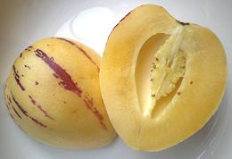

SAFARI
Users
Varieties
American Nightshade
[Branched Kalaloo (Caribbean); Solanum americanum]
This plant is very widespread and rather variable in appearance, so it is easily confused with other nightshades that produce black berries. It is native to the temperate Americas, Australia, New Guinea and Melanesia, and has been introduced to Hawaii, Southeast Asia, Africa and Madagascar. Unripe berries are highly toxic, with black berries less so, but toxicity is highly variable.
In some regions the berries are cooked and made into jams. Young
leaves and shoots are cooked as greens in many regions. The cooking
water is discarded because it contains the water soluble toxins. It is
one of the greens used in the Caribbean in callaloo, a stew of leafy
greens famous in the region, but originating in West Africa.
Photo by
Forest & Kim Starr distributed under license Creative Commons
Attribution-ShareAlike v3.0 Unported, Attribution Required.
Ashwagandha
[Poison Gooseberry, Winter Cherry, Indian Ginseng; Withania somnifera]
This plant is most known from Indian ayurvedic medicine where the root is used for a number of symptoms, while fruit and leaves are used externally as a poultice. The fruit does, however, have a culinary application as well, it can be used in place of rennet to curdle milk in making vegetarian cheese.
The very closely related Withania coagulans (Ashutosh booti,
Indian rennet, panirband, vegetable rennet) is more commonly used.
Very little need be used, so the various toxic alkaloids should not
be a problem.
Photo by Wowbobwow12 distributed under license Creative
Commons
Attribution-ShareAlike v3.0 Unported.
Black Nightshade
[Garden Nightshade, Garden Huckleberry, Hound's Berry, Wonder Berry; Solanum nigrum]
Native to Eurasia, this plant has been introduced into the Americas, Australasia and South Africa. Ripe berries and cooked leaves are eaten, but care must be taken because toxicity varies widely from one variety to another. Unripe berries of many varieties are quite toxic, though rarely fatal. While most varieties produce berries ripening to black, some produce red or orange berries.
Black Nightshade berries were once a popular pie filling in Europe.
Since the berries were gathered wild with uncertain toxicity, they
were given a long cooking time to detoxify. Leaves and berries are eaten
in Greece, Turkey, Indonesia and much of Africa, generally cultivated
varieties with low toxicity. The greens of more toxic varieties are
cooked in several changes of water. The discarded water carries away
water soluble toxins.
Photo by Harald Hubich distributed under license Creative
Commons
Attribution-ShareAlike v3.0 Unported attribution required.
Bush Tomatoes
[Desert Raisin, Kutjera, Bush Sultana: Solanum centrale | very similar "Bush Tomatoes": Potato Bush; Solanum ellipticum | Potato Bush; Solanum ellipticum | Wild Tomato; Solanum quadriloculatum]
All the wild Australian "bush tomatoes" are very similar arid climate shrubs bearing small round fruit. Berries of all were gathered by the aboriginal people and eaten raw or cooked.
The most important
currently is the Desert Raisin, which is in small scale cultivation
by aboriginal communities in central Australia and sold commercially.
The fruit can be allowed to dry on the bush and will look like raisins.
The flavor is strong and similar to Tamarillo and Caramel. They are
particularly favored for making sauces and condiments, and are
available whole, or ground as Kutjera Powder.
Photo by Melburnian distributed under license Creative
Commons
Attribution-ShareAlike v3.0 Unported.
Cocona
[Solanum sessiliflorum]
This plant is native to the Amazon Rainforest, particularly in Peru,
and is sometimes cultivated for its edible fruit. The fruit can be red,
yellow or orange, and tastes like a blend of tomato and lemon. It is
closely related to the Naranjilla and Pseudolulo.
Photo by Dtarazona contributed to the Public Domain.
Datura
[Jimson Weed, Devil's weed, Devil's cucumber, Thorn-apple, Pricklyburr, Angel's trumpet and Devil's trumpet, Datura stramonium, also similar Datura wrightii]
A common weed here in Southern California, this plant is far more deadly
than the Deadly Nightshade. It's mind altering powers are so awesome
even people heavily into "recreational substances" have generally
shunned it. All parts of the plant are highly toxic, and the margin
between an effective dose and death is narrow.
Details, and why not to..
Deadly Nightshade
[Bella Donna; Atropa belladonna]
Native to Western Europe, North Africa and Western Asia, this is one of the most toxic of Old World plants. It has been introduced into North America. All parts of the plant are highly toxic, but most intensely the roots and berries. Nightshade eyedrops were once used by Italian Renaissance beauties to dilate the pupils of their eyes, thus the name "Bella Donna". The active ingredient, the toxin atropine is still used for dilation, but not for eye exams because the effect is too long lasting,
Death by belladonna is not pleasant, but preferable to strychnine.
The antidote to nightshade poisoning is Physostigmine, originally
extracted from the West African Calabar Bean. It must be administered
with care, as it's just as deadly as the nightshade. Calabar Bean
poisoning is likewise treated with extracts of the Deadly Nightshade.
Photo by Kurt Stueber distributed under
GNU
Free Documentation License v1.2 or later.
Garden Huckleberry
[Solanum scabrum]
This plant is found in Africa and North America, with uncertain
origin. In Africa it is grown in two varieties, one for leaves used as
a common potherb, and one for ripe fruit, used to make a purple dye.
Photo by Marco Schmidt distributed under license Creative
Commons
Attribution-ShareAlike v2.5 Generic.
Indian Nightshade
[hairy-fruited eggplant; Solanum lasiocarpum syn Solanum ferox]
Note that there are other plants also called "Indian Nightshade".
This plant is found wild in parts of South Asia but is mostly found in
cultivation. Cultivated varieties bear larger fruit that lacks the prickles
on the wild fruit. The flowers are white, and fruits, when ripe, are pale
yellow and light green in the center. In India it is used as a sour relish in
curries. In Thailand it is used to make a variety of Nam Prik, a table
condiment. It is of interest to botanists for interbreeding with South
American species, particularly naranjilla.
Photo by Vinayaraj distributed under license Creative Commons
Attribution-ShareAlike 4.0 International.
Naranjillo
[Lulo (Colombia); Solanum quitoense]
Native to northwestern South America, this nightshade is a moderate size perennial with large fuzzy green and purple leaves. It is favored for its tomato like fruit, which is described as having a flavor similar to rhubarb and lime. It is much used to make the beverage Lulada in Colombia.
This plant is challenging in large scale cultivation because
it is vulnerable to wind and too much direct sunlight. It is also quite
vulnerable to pests, particularly nematodes. Hybrids with other
Solanum species are now common for resistance to nematodes.
Photo by Fibonacci distributed under license Creative
Commons
Attribution-ShareAlike v3.0 Unported attribution required.
Nipple Fruit
 [Cows Udder; Fox Face (Japan); Five Fingered Eggplant (China);
Solanum mammosum]
[Cows Udder; Fox Face (Japan); Five Fingered Eggplant (China);
Solanum mammosum]
Native to the Tropical Americas, this nightshade has been
much adopted for festival decorations in Asia, particularly China.
The plant is toxic, but immature fruits are cooked and eaten as a
vegetable. In the Philippines fruit is cooked and eaten, while the
leaves are steeped into a tea considered to relieve pain.
Photo by Andrew Butko distributed under license Creative
Commons
Attribution-ShareAlike v3.0 Unported attribution required.
Panir Phool
[Paneer booti, Ashutosh booti (India); Rishyagandha (Sanskrit); Withania coagulans syn Puneeria coagulans]
This nightshade is native to Afghanistan, Pakistan and the Indian
Subcontinent. The berries contain a rennet-like protease, which makes them
useful in India for coagulating milk for cheese production. The photo is
actually the very similar Withania frutescens, as no suitable photos
of coagulans were available - but coagulans fruits are in
clusters rather than solitary.
Photo by Krzysztof Ziarnek, Kenraiz distributed under license
Creative Commons
Attribution-ShareAlike 4.0 International.
Pepino
 [Pepino dulce; Solanum muricatum]
Native to western South America from Colombia to Chile, this
nightshade shrub produces sweet melon-like fruit. While still rare,
some are grown in California and Hawaii. Recently introduced varieties
developed in New Zealand may result in increased availability (and
lower prices) here in North America.
Photo by Eglekuc distributed under license Creative
Commons
Attribution-ShareAlike v3.0 Unported.
Pseudolulo
[Lulo de Perro; Solanum pseudolulo]
This plant is native to northwestern South America. It is rarely
cultivated because it is such a common weed, though some botanists
think it can be developed into a crop. It is considered less desirable
than the true Lulo (Naranjilla), but can grow in full sun, while that
plant needs the protection of part shade.
Photo by IKAI distributed under license Creative
Commons
Attribution-ShareAlike v3.0 Unported.
Tamarillo
[Tree Tomato; Tamamoro, Tomate de árbol (South America); Tammatar, Ram Bheda (Nepal); Solanum betaceum]
Native to the Andean region of South America from Colombia to Chile, this is one of the most popular fruits in the region. It is now also grown in the United States, parts of Africa, the Himalayan foothills, Australia, New Zealand, Malaysia and the Philippines, mostly at higher elevations. The plant can grow to 16 feet tall and bear fruit for about 12 years.
The egg shaped fruit ranges from 1-1/2 to 4 inches in length. Yellow
and Orange varieties are sweeter, red varieties more tart and savory.
Their fruit is most commonly halved lengthwise and eaten with a spoon,
though in New Zealand it is often spread on toast. In the Andean
region it is chopped up with chilis to make a table condiment. The
condiment is called "Aji", but so are most other chili containing
table condiments in the region. Elsewhere, the fruit is often included
in sauces, stews, chutneys and curries.
Photo by C T Johansson distributed under license Creative
Commons
Attribution-ShareAlike v3.0 Unported.
Tobacco
[Nicotiana tabacum]
A nightshade native to the Americas but now cultivated in temperate climates worldwide. The leaves contain unusually high amounts of the toxic alkaloid Nicotine, considered one of the most addictive drugs known to man. Because the delivery systems for this drug, cigars, cigarettes, pipes, chews, etc. are traditional (natives of the Americas started smoking tobacco cigars over 2000 years ago) it is legal.
The tobacco industry promotes tobacco delivery systems in many subtle,
not so subtle and insidious ways resulting in a huge base of addicts.
Being legal, tobacco products can be, and are, taxed up the wazoo because
the addicts will pay almost any price for them. This assures that tobacco
will not be made illegal, though the health costs may exceed the revenue.
Photo by Joachim Müllerchen distributed under license
Creative Commons
Attribution-ShareAlike v3.0 Unported attribution required.
Tomate Salvaje
[Tomate Silvestre (Colombia); Solanum sibundoyense]
Native to the cloud forests of Colombia, this small tree, up to
26 feet high, produces fairly large edible fruit. The fruit varies from
sweet and juicy to acid depending on the tree, and is transportable with
decent shelf life . The Tomate Salvaje is experimental in cultivation.
New Zealand growers have found it needs part shade to fruit well. The
fruit in the photo is not yet ripe.
Photo by Cyphomandra distributed under license Creative
Commons
Attribution-ShareAlike v3.0 Unported attribution required.
Wolfberry
 [Fructus Lycii (pharmacology); Gouqizi (China); Jizi (Singapore);
Kuko no mi, Kuko no kajitsu (Japan); Gugija (Korea);
dre-tsher-mai-dre-bu (Tibet); Gao Gee (Thailand); Duke of Argyll's
tea tree (UK); Tibetan Goji, Himalayan Goji (health food stores);
Matrimony Vine; Lycium barbarum & Lycium chinense]
[Fructus Lycii (pharmacology); Gouqizi (China); Jizi (Singapore);
Kuko no mi, Kuko no kajitsu (Japan); Gugija (Korea);
dre-tsher-mai-dre-bu (Tibet); Gao Gee (Thailand); Duke of Argyll's
tea tree (UK); Tibetan Goji, Himalayan Goji (health food stores);
Matrimony Vine; Lycium barbarum & Lycium chinense]
Native to somewhere around Turkey and Eastern Europe wolfberries are
now grown worldwide and particularly in China, the main commercial
supplier. The berry tastes similar to dried cranberries but is more tart
and tastes somewhat of tomato, not surprising since tomatoes are also
nightshades. They have strong antioxidant properties and may be helpful
in preventing vision problems.
Details and Cooking
Photo by
Sten Porse distributed under Creative Commons
Attribution 2.5/2.0/1.0.